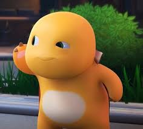
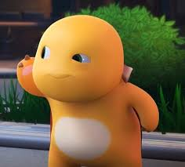

Hari itu terasa istimewa. Setelah seharian sibuk, aku akhirnya memiliki waktu untuk bermain dengan Doragon. Saat aku membuka pintu, dia sudah menunggu di tempat favoritnya, yaitu di dekat jendela yang terkena sinar matahari. Sisiknya berkilau indah, seolah menyambutku dengan senyuman.
Saat mataku bertemu dengan matanya yang cemerlang, aku merasakan ikatan yang kuat. Dia mengibaskan sayapnya kecil, mengeluarkan suara ceria seperti dengungan lembut. Aku bisa melihat betapa senangnya dia melihatku kembali. Dengan langkah pelan, aku mendekatinya, dan dia melompat turun, siap untuk bermain.
Aku mengeluarkan sepotong buah favoritnya—sepotong mangga yang manis. Dengan lincah, Doragon mendekat, mencium aroma buah tersebut, dan dengan cepat mengambilnya dari tanganku. Saat dia mengunyahnya, aku tertawa melihat ekspresi bahagianya.
Setelah itu, kami bermain di halaman belakang. Doragon berlari-lari kecil, mengejar bola warna-warni yang aku lemparkan. Sesekali, dia berhenti, mengeluarkan percikan api kecil dari mulutnya, membuat kami berdua terkesima dengan pertunjukan mini yang ia sajikan.
Malam tiba, dan kami duduk di bawah langit berbintang. Doragon menghangatkan tubuhku dengan kehadirannya. Saat kami berdua menikmati momen tenang ini, aku merasa bersyukur memiliki teman yang begitu spesial. Dengan setiap detik yang berlalu, ikatan kami semakin erat, seolah dunia di sekitar kami lenyap, dan hanya ada kami berdua.
| Ukuran | Ciri Khas | Sifat | Kebiasaan | Kemampuan Khusus |
|---|---|---|---|---|
| Sekitar satu meter dari kepala hingga ekor, cukup kecil untuk dijadikan teman di rumah. | Mempunyai sepasang sayap kecil yang dapat mengepak dengan anggun, meski belum bisa terbang jauh. Matanya besar dan cemerlang, berwarna kuning keemasan, selalu memancarkan rasa ingin tahu. | Naga ini sangat ramah dan suka bermain. Ia senang berinteraksi dengan manusia dan bisa menjadi penghibur yang setia. Terkadang, ia juga tampak agak nakal, suka bersembunyi di tempat yang tidak terduga dan mengejutkan kamu dengan kehadirannya. | Doragon menyukai makanan yang bercita rasa manis, seperti buah-buahan segar dan kadang-kadang permen. Ia juga suka berjemur di bawah sinar matahari dan berkeliling di sekitar rumahmu, menjelajahi setiap sudut. | Naga ini memiliki kemampuan unik untuk mengeluarkan percikan api kecil dari mulutnya saat merasa senang, seperti kembang api mini yang memukau. Ini menjadi hiburan tersendiri ketika kamu mengajaknya bermain. |
 
